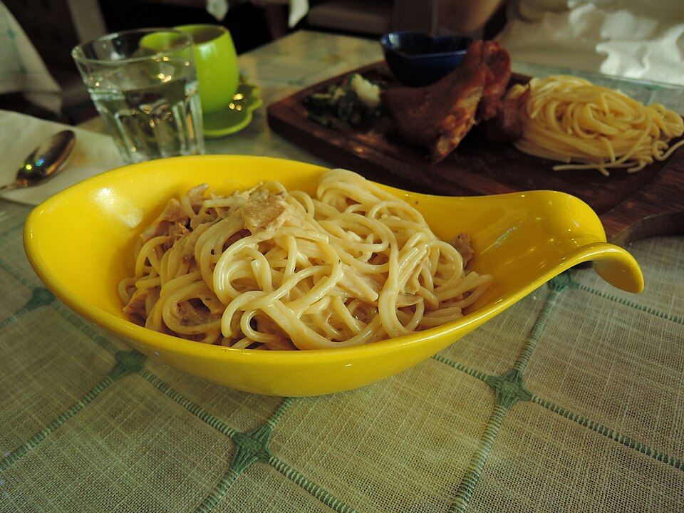

Frutos do mar · Massas com frutos do mar
Bucatini com atum, iogurte e pimenta

Ingredientes
- 1 pacote de bucatini (500 g)
- 1 lata de atum
- 1 xícara (chá) de iogurte natural
- 3 colheres (sopa) de azeite
- 1 xícara (café) de pimenta verde
- 1 cebola picada
- Sal a gosto
Modo de preparo
- Cozinhe o macarrão; escorra.
- Refogue a cebola no azeite; junte atum e pimenta por 2 minutos; acrescente o iogurte, o sal e a massa. Sirva.
Observação
Chef Maria Montanarini (Casa Europa, SP).